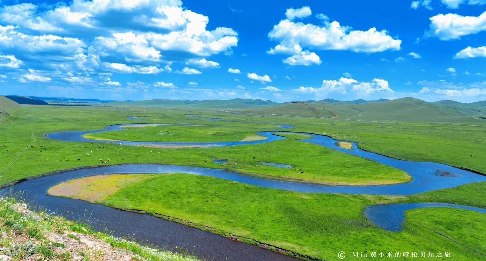
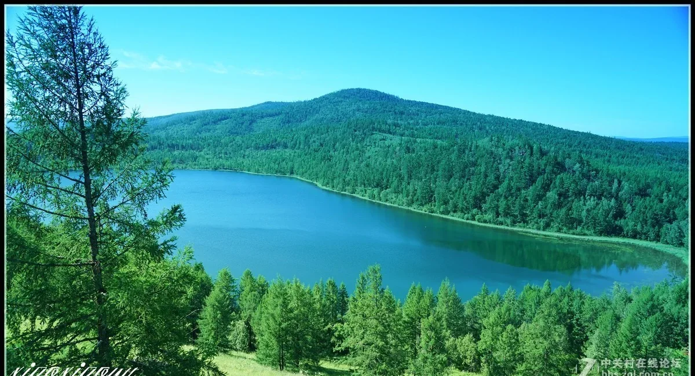
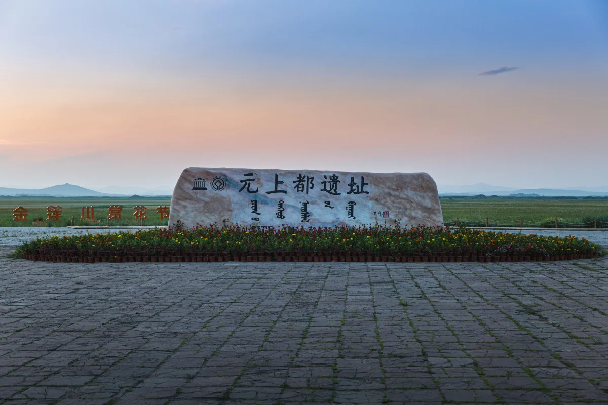
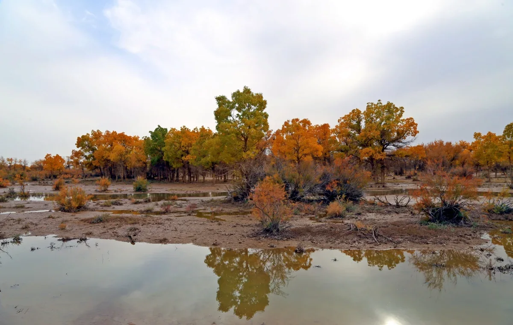

INTERACTIVE ATLAS
点击一座城，
点击一座城，
打开它的北疆叙事
十二个盟市，十二块拼图。把鼠标停在任意一块上，先看它的面孔；点下去，就进入那座城的景点、非遗、风物与路线。
NM · 97°E—126°E / 37°N—53°N
TWELVE CITIES
在地图上查看
十二城，十二种辽阔
从东部草原到西部荒漠，从边境口岸到黄河几字弯。每一座城都有自己的地理、味道与手艺。
 01 / 12
01 / 12
呼和浩特
HOHHOT青城召庙，乳都新风
进入城市 02 / 12
02 / 12
包头
BAOTOU草原钢城，鹿鸣黄河
进入城市 03 / 12
03 / 12
乌海
WUHAI大漠湖城，葡萄与岩画
进入城市 04 / 12
04 / 12
赤峰
CHIFENG红山玉龙，石林草原
进入城市 05 / 12通辽
TONGLIAO科尔沁叙事，安代与版画
进入城市 06 / 12
06 / 12
鄂尔多斯
ORDOS黄河几字弯，沙海与圣陵
进入城市
07 / 12呼伦贝尔
HULUNBUIR天下第一曲水，北国碧玉
进入城市 08 / 12
08 / 12
巴彦淖尔
BAYANNUR河套平原，乌梁素海
进入城市 09 / 12
09 / 12
乌兰察布
ULANQAB火山草原，薯都云谷
进入城市
10 / 12兴安盟
HINGGAN兴安岭上，阿尔山泉
进入城市
11 / 12锡林郭勒
XILINGOL典型草原，元上都与马
进入城市
12 / 12阿拉善
ALXA胡杨、沙山与苍天
进入城市
360° PANORAMA
把头转过去，
10 PANORAMAS把头转过去，
看北疆的四周
10 个真实球面全景。左右拖动画面，抬头看天，低头看地。
5 CITIES
全景素材来源 360Cities · 仅用于教学展示
ECOLOGY OF THE NORTH
按生态类型探索
北疆的六种底色
草原、荒漠、森林、湿地、黄河与物种，共同构成中国北方最重要的生态安全屏障。


LIVING HERITAGE
在城市里寻找非遗
草原文脉，匠心传承
长调、呼麦、马头琴、安代舞、刺绣与奶食技艺——它们不是展柜里的标本，而是仍在草原上发生的生活。
BUILD YOUR ROUTE
选几天，拼一条
DRAG · DROP · GENERATE
选几天，拼一条
自己的北疆
先定天数，再把十二城拖进日程。点生成，得到一条按天排好的研学路线。
去几天
拖动城市到右侧日程，或点击城市加入
MY ITINERARY5 天 · 0 城
拖动地图上的城市，或点击城市自动填入下一个空位；点日程里的 × 可移除。
VR 全景 · 720°
生态观测 · 12 城
非遗工坊 · 36 项
MENGYIXING CLASSROOM
把北疆，变成一堂
把北疆，变成一堂
可以走进去的课
蒙益行不是一份景点清单，而是一套可以用来上课、做研学、准备旅行的北疆知识地图。先选一座城，再沿着景点、非遗与生态往下走。